Mercedes-Benz Материал из Википедии — свободной энциклопедии Текущая версия страницы пока не проверялась опытными участниками и может значительно отличаться от версии, проверенной 30 апреля 2022 года; проверки требуют 56 правок. Перейти к навигацииПерейти к поиску Запрос «Мерседес» перенаправляется сюда; см. также другие значения. Mercedes-Benz Изображение логотипа Stuttgart, Germany (3431696457).jpg Тип Подразделение Mercedes-Benz Group Основание 1926 Основатели • Карл Бенц • Готлиб Даймлер • Вильгельм Майбах Расположение Германия: Штутгарт Ключевые фигуры Ола Кэллениус (председатель совета директоров) Отрасль автомобильная промышленность (МСОК: 2910) Продукция Легковые автомобили, грузовики, автобусы, двигатели Оборот ▲ €93,877 млрд (2019 год)[1] Операционная прибыль ▼ €3,359 млрд (2019 год)[1] Активы ▲ €26,289 млрд (2018 год)[1] Число сотрудников 152 048 (31 декабря 2019)[1] Материнская компания Mercedes-Benz Group Дочерние компании • Mercedes-AMG • Mercedes-Maybach Сайт mercedes-benz.de Логотип Викисклада Медиафайлы на Викискладе Mercedes-Benz ([mɛʁˈtseːdəs ˈbɛnts] или [-dɛs-][2][3]; рус. Мерседе́с-Бенц[4]) — торговая марка и одноимённая компания — производитель легковых автомобилей премиального класса, грузовых автомобилей, автобусов и других транспортных средств, входящая в состав немецкого концерна «Mercedes-Benz Group». Является одним из самых узнаваемых автомобильных брендов во всём мире[5]. Штаб-квартира Mercedes-Benz находится в Штутгарте , Баден-Вюртемберг, Германия. Наименование торговой марки было принято в 1926 году[6] в результате слияния двух конкурирующих фирм, Benz & Cie. (основана Карлом Бенцем) и Daimler-Motoren-Gesellschaft (основана Готлибом Даймлером), в единый концерн — Daimler-Benz. Название бренда образовано от двух наиболее значимых автомобилей объединённых компаний — Mercedes 1901 года и Benz Patent-Motorwagen 1886 года. В 2018 году бренд Mercedes-Benz оценивался в 48,601 млрд долларов, удерживая второе место (после Toyota) среди компаний-производителей автомобилей и восьмое место среди всех брендов мира[5]. По оценке BrandZ, в 2018 году марка входила в список Top 100 Most Valuable Global Brands, где занимала 46 место среди наиболее дорогих брендов со стоимостью в 25,684 млрд долларов[7]. В 2019 году бренд Mercedes-Benz оценивался в 60,355 млрд долларов, тем самым занимая первое место в рейтинге компаний-производителей автомобилей[8].
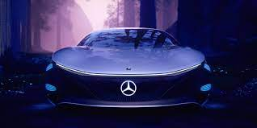 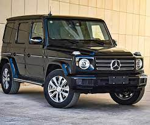Содержание 1 История 1.1 Benz & Cie. 1.2 Daimler-Motoren-Gesellschaft 1.3 Объединение конкурентов 1.4 Вторая мировая война 1.5 Послевоенный период 1.6 «Аденауэры» 1.7 Понтоны 1.8 SL (Super Leicht) 1.9 Плавники 1.10 Новая эпоха 1.11 1970-е годы 1.12 1980-е 1.13 1990-е 1.14 2000-e 1.15 2010-е 2 История логотипов 3 Модельный ряд 3.1 Легковые автомобили 3.1.1 Значимые автомобили 3.1.2 Концепт-кары 3.2 Автобусы 3.3 Фургоны 3.4 Грузовые автомобили 4 География производства 5 Тюнинг 6 Mercedes-Benz Center 7 Медиа 7.1 Печатные издания 7.1.1 Mercedes-Benz Magazin 7.1.2 Mercedes-Benz Classic 7.1.3 Mercedes-Benz Transport 7.2 Mercedes-Benz TV 7.3 В сувенирной и игровой продукции 7.4 Спонсорство 8 Факты 9 Судебные разбирательства 10 См. также 11 Примечания 12 Библиография 13 Ссылки
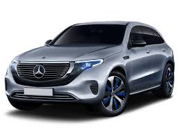xИстория История марки Mercedes-Benz слагается из историй двух известных немецких автомобильных компаний — Benz & Cie. (основана Карлом Бенцем в 1883 году) и Daimler-Motoren-Gesellschaft (основана Готлибом Даймлером в 1890 году). Обе компании развивались самостоятельно до 1926 года, когда они объединились в единый концерн Daimler-Benz, впоследствии переименованный в Daimler AG. Benz & Cie. Основная статья: Benz & Cie. Крылатый «Бенц» русских автовойск, аэроплан в кузове грузовика на Кавказском фронте Первой мировой, 1916 1 октября 1883 Карл Бенц основал компанию «Бенц и Ко. Райнише Газмоторен-Фабрик, Манхайм» (Benz & Cie.) в форме открытого торгового общества вместе с бизнесменом Максом Каспаром Розе и коммерсантом Фридрихом Вильгельмом Эсслингером. В 1886 году предприятием была создана первая трёхколёсная самоходная повозка с бензиновым двигателем. В этом же году 29 января её создатель — Карл Бенц — получил патент DRP No. 37435 на это изобретение[9]). Впоследствии трёхколёсный автомобиль был запущен в серийное производство. В 1893 году Карл Бенц получил патент DRP No. 73515 для двойного стержня управления и инициировал выпуск четырёхколёсных автомобилей «Виктория» с двигателем мощностью 3 л. с.[10], скорость которых составляла 17-20 км/ч. За первый год было продано 45 таких автомобилей. В 1894 году компания начала выпуск автомобилей модели «Velo», которые участвовали в первых автомобильных гонках Париж — Руан. В 1895 году был создан первый грузовик, а также первые в истории автобусы[11]. Через год, в 1896 году, фирма Benz & Cie. разработала первый цилиндр для двигателей, которые Бенц назвал «contra engine», поскольку цилиндры были установлены противоположно друг другу[12].
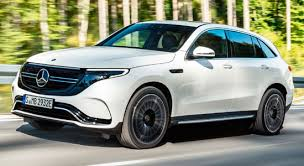1901 году, вскоре после выпуска Даймлером новой модели «Mercedes 35 PS», становится понятно, насколько фирма отстаёт от прогресса. С целью улучшения положения акционеры приглашают в компанию французского инженера Мариуса Барбару[13]. Из-за технических разногласий Карл Бенц покинул собственную компанию. Вскоре стало ясно, что французский конструктор не оправдывает возложенных на него надежд. Следуя логике, что немецкие автомобили должны делаться немцами, в фирму на должность главного инженера приглашён Фриц Эрле. Эта идея также оказалось неудачной. Только с приходом в компанию талантливого инженера Ганса Нибеля дела постепенно начали идти в гору. В 1909 году, создав целый ряд успешных легковых автомобилей, фирма построила самый известный гоночный автомобиль того времени «Блитцен Бенц» с двигателем мощностью в 200 лошадиных сил и рабочим объёмом 21 594 см³[14]. В послевоенные годы было создано множество новых моделей, большинство из которых с успехом выпускались до середины двадцатых годов. Всего с момента начала производства в 1886 году и до объединения с «Даймлер-Моторен-Гезелльшафт» в 1926 году, фирма «Бенц и Ко.» произвела 47 555 транспортных средств, включая легковые автомобили, грузовики и омнибусы. Daimler-Motoren-Gesellschaft Основная статья: Daimler-Motoren-Gesellschaft В декабре 1883 года Готлиб Даймлер защитил собственный «газовый двигатель с зажиганием от горячей трубки» патентом DRP No. 28022. Также он получил патент DRP No. 28243 на систему «регулирования оборотов двигателя с помощью выпускного клапана». Эти два патента послужили основой для первого быстроходного двигателя внутреннего сгорания. 29 августа 1885 года Готлиб зарегистрировал Daimler Reitwagen («верховая повозка») с «газовым или бензиновым двигателем», получив патент DRP No. 36423[15]. В 1889 году он представил новый двухцилиндровый V-образный двигатель, развивающий мощность в 1,5 л. с. при 600 об/мин. Через год, весной 1890 года, Вильгельм Майбах сконструировал первый 4-цилиндровый, четырёхтактный двигатель. Автомобиль, оснащённый данным силовым агрегатом, обладал весом в 153 кг и развивал мощность в 5 л. с. при 620 оборотах в минуту. 28 ноября 1890 года Готлиб Даймлер совместно со своими партнёрами, Вильгельмом Майбахом и Максом Дуттенхофером (нем. Max Duttenhofer), основали компанию «Даймлер-Моторен-Гезелльшафт» в районе Бад-Канштат (Штутгарт), решив выпускать четырёхколёсный автомобиль, созданный ими четырьмя годами ранее[16][17]. 18 марта 1895 года компания Daimler-Motoren-Gesellschaft доставила в Кронштадт первый в мире грузовик с двухцилиндровым двигателем, мощностью 4 л. с. Через два года летом DMG представило «Phönix» — первый тип автомобилей с двигателями в передней части. После ряда не очень удачных попыток, которые всё же нашли своих восторженных покупателей, конструктору В. Майбаху в 1901 году удалось создать успешный образец — Mercedes 35 PS. По настоянию консула Австро-Венгерской империи в Ницце и по совместительству главы представительства «Даймлер» во Франции Эмиля Еллинека новый автомобиль назван в честь Девы Марии Милосердной (фр. Maria de las Mercedes, от латинского «merces» — «дары»), в честь которой также названы все его дети, в числе которых небезызвестная дочь консула Мерседес, и имущество (яхты, дома, отель и казино).
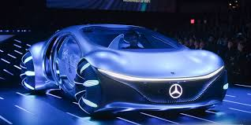Первый «Мерседес-35PS» обладал четырёхцилиндровым двигателем рабочим объёмом 5913 см³[18], классическим расположением основных агрегатов и стильной (по тем временам) внешностью. Через год свет увидел более совершенную конструкцию под названием «Мерседес-Симплекс»[18]. Кроме того, расширился модельный ряд. Самые известные представители этой серии именовались как «Mercedes-40/45PS» и «Mercedes-65PS», и оснащались двигателями рабочим объёмом в 6785 см³ и 9235 см³ соответственно, позволявшие развивать скорость до 90 км/ч. До Первой мировой войны компания «Даймлер-Моторен-Гезелльшафт» успела выпустить широкий модельный ряд собственных автомобилей с различными двигателями (от 1568 см³ до 9575 см³), рассчитанных на широкий круг потребителей, включавший роскошные, практически бесшумные автомобили, оснащённые двигателями с бесклапанным газораспределением, произведённые по патенту американской компании «Найт». Сразу же после войны Пауль Даймлер, сын Готлиба Даймлера, начал проводить эксперименты с компрессором, позволяющим в полтора раза повысить мощность двигателя. Занявший должность главного инженера в 1923 году Фердинанд Порше довёл эксперименты до логического завершения, создав в 1924 году один из самых выдающихся автомобилей мира — «Mercedes-24/100/140PS» с новым шасси и шестицилиндровым компрессорным двигателем рабочим объёмом 6240 см³, развивающим мощность в 100—140 лошадиных сил[19][20]. К 1926 году компания «Даймлер-Моторен-Гезелльшафт» произвела на всех своих заводах в общей сложности 147 961 автомобиль, причём максимальная производительность была достигнута в 1918 году. Объединение конкурентов Основная статья: Daimler-Benz
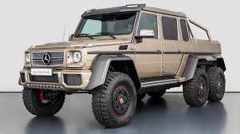Трёхлучевая звезда Мерседес-Бенц на крышке радиатора Первая мировая война, обрушение курса валюты, а также проникновение на внутренний рынок Германии зарубежных производителей, таких как Ford Motor Company, привели к серьёзному структурному кризису в немецкой автомобильной промышленности. 28 июня 1926 года две конкурирующие фирмы решили объединиться, образовав новый концерн Daimler-Benz, который смог эффективно использовать опыт и знания конструкторов обеих компаний. Руководителем нового предприятия был назначен Фердинанд Порше. Он полностью обновил производственную программу, взяв за основу последние модели Daimler-Motoren-Gesellschaft, выпускавшиеся теперь под маркой Mercedes-Benz. Первой новой разработкой Порше в 1926 году стала компрессорная серия, включавшая модель Mercedes 24/100/140 PS с шестицилиндровым мотором рабочим объёмом 6240 см³. За большую мощность и скорость (до 145 км/ч) её прозвали «смертельной ловушкой». Она стала базовой для более известной серии S, состоявшей из моделей S (Sport), SS (Supersport), SSK (Supersport Kurz — «суперспорт короткий») и SSKL (Supersport Kurz leicht — «суперспорт короткий лёгкий»)[21][22]. В 1928 году Порше покинул Daimler-Benz, а его место занял Ганс Нибель (нем. Hans Nibel)[23]. Под его руководством выпускались легковые автомобили Mannheim 370 (англ.) с шестицилиндровым мотором рабочим объёмом 3,7 л. и Nürburg 500 (англ.) с восьмицилиндровым 4,9-литровым агрегатом, базировавшимися на последних разработках Порше. В 1930 году появился «Большой Мерседес» (нем. Großer Mercedes) или Mercedes-Benz 770 (W07) с восьмицилиндровым 200-сильным двигателем, рабочим объёмом в 7655 см³ с нагнетателем. В 1931 году фирма дебютировала в секторе малолитражных автомобилей, где её представлял весьма успешный Mercedes 170 (англ.) с шестицилиндровым мотором, рабочим объёмом в 1692 см³ и независимой подвеской передних колёс. В 1933 году появились легковой Mercedes-Benz 200 и спортивный Mercedes-Benz 380 с 2,0- и 3,8-литровыми моторами. Последний из них был оснащён нагнетателем и имел мощность в 140 лошадиных сил. На базе спортивной модели в 1934 году создали Mercedes-Benz 500K с 5-литровым двигателем, ставший через два года основой для более известного большого компрессорного автомобиля Mercedes-Benz 540K (англ.). В 1934—1936 годах фирма выпустила лёгкий Mercedes-Benz 130 (англ.) с четырёхцилиндровым 26-сильным двигателем заднего расположения, рабочим объёмом всего 1308 см³, за которым последовали родстер 150 (англ.) и седан 170H (англ.).
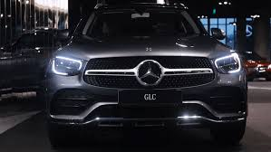Под техническим руководством главного конструктора Макса Зайлера, сменившего Нибеля в 1935 году, созданы популярная недорогая модель 170V с четырёхцилиндровым мотором рабочим объёмом 1697 см³, первый в мире серийный легковой автомобиль[24][25][26] с дизельным двигателем Mercedes-Benz 260 D (1936 год), а также новый «Большой» Mercedes-Benz 770 (W150) (1938 год) с рамой из балок овального сечения и задней пружинной подвеской, служивший нацистским лидерам. Вторая мировая война Во время Второй мировой войны концерн Daimler-Benz выпускал как грузовики, так и легковые автомобили различных классов. Однако двухнедельная воздушная бомбардировка англо-американскими ВВС в сентябре 1944-го года превратили Daimler-Benz Aktiengesellschaft в руины. Разрушение крупного концерна оценивались по-разному: главный цех в Штутгарте был разрушен на 70 %, двигательный и кузовной цеха в Зинделфингене — 85 %, цех грузовиков в Гаггенау был полностью уничтожен. Бывшей фабрике Benz & Cie. в Маннгейме повезло больше всех — всего 20 % разрушения, а завод дизельных двигателей Berlin-Marienfelde, приобретённый в 1902, полностью сравняли с землёй. Когда оценки разрушения были готовы к январю 1945-го года, совет директоров постановил, что «Daimler-Benz физически больше не существует»[27]. Послевоенный период На послевоенное восстановление разрушенных заводов потребовалось время, поэтому автомобильное производство было начато только в июне 1946 года. Для разработки новых автомобилей не было ни технической базы, ни средств, поэтому первым послевоенным автомобилем стал седан W136 — «170V». Хотя конструкция была разработана ещё в середине 1930-х годов, малолитражный автомобиль с мотором всего 38 лошадиных сил стал началом новой истории марки. Уже с мая 1949 года была проведена крупная модернизация. Рабочий объём двигателя увеличен на 70 см³, (соответственно мощность выросла до 52 л. с.; модель «170S»), появились варианты в кузовах кабриолет и универсал (т. н. кабриолеты «А» и «B») и главное — модели с дизельными двигателями «170D». К началу 1950-х годов концерн Daimler-Benz строил крупные планы на будущее, однако запуск нового поколения автомобилей требовал дальнейшего развития производственной базы. Поэтому в начале 1950-х годов, несмотря на появление новой роскошной серии «300», продолжался выпуск моделей с морально устаревшей конструкцией. Продолжалась постоянная модернизация и запуск новых моделей. Так в январе 1952 года появилась модель с увеличенным кузовом, которая получила номер W191[en][20]. Но ещё до этого, в марте 1951 года, на автомобиль поставили шестицилиндровый двигатель с мощностью 80 л. с. вместо 4-х цилиндрового. Вместе с новым дизайном экстерьера (например, расположение передних фонарей в крылья) автомобиль W187[en] получил новое имя «220» и занял средний сегмент между «170»-ми и «300»-ми. Он предлагался в трёх кузовах (седан и кабриолеты «А» и «B»). Всего за девять лет (выпуск завершился в сентябре 1955 года) построено соответственно 151 042 и 18 514 автомобилей «170» и «220». Благодаря им компания смогла создать прочный фундамент, на котором она станет ведущим автомобильным производителем в Западной Европе. 170-е, которые пережили войну MB 170 V Cabrio.jpg Mercedes W136 170S MTP07.jpg Mercedes 170 DS.JPG W136 (1936—1939) W136 (1946—1953) W191 (1949—1955) «Аденауэры» Флагманские автомобили W186 (слева) и его преемник W189 (справа) собирались вручную c 1951 по 1961 года. Устаревшая конструкция не помешала вернуть марке её довоенное величие После успешного восстановления заводов и производства своих малолитражных автомобилей, к концу 1940-х годов компания вновь приступила к восстановлению своего довоенного бренда как производителя роскошных автомобилей. Учитывая современные прорывы в моде автомобилестроения, в ноябре 1951 года на Парижском автосалоне появился новый представительский лимузин W186[en] «300»[28]. Автомобиль, хоть и был построен в классической компоновке (отдельная рама и кузов), однако оснащался мощным 6-цилиндровым двигателем рабочим объёмом в 2996 см³ с верхним распределительным валом. Новая модель производилась в двух кузовах — седан и четырёхдверный кабриолет «D» и имела огромный успех среди крупных бизнесменов, знаменитостей и политиков. Именно последняя категория и дала автомобилю неофициальное название в честь первого федерального канцлера ФРГ, Конрада Аденауэра, который имел личный автомобиль и высоко его оценил. Так как сборка автомобиля проводилась вручную, интерьеры делались под покупателей и оснащались радио, телефоном и многими другими новшествами. Ручная сборка автомобилей позволяла проводить непрерывные модернизации, поэтому в конце 1954 года появилась серия W186 «300b», которая получила новые тормозные барабаны и передние форточки. Год спустя её заменила «300с», оснащённая автоматической коробкой передач фирмы Borg-Warner. Но самый большой шаг вперёд был сделан в середине 1950-х годов, когда фирмой Bosch было сделано изобретение системы впрыска топлива. Ей с 1955 года оснащали серию W188 «300Sc». В январе 1952 года появилась ещё одна серия представительского класса W188[en] — «300S», которая выпускалась в нескольких кузовных модификациях: купе, кабриолет «А» и двухместный родстер. Степень сжатия двигателя увеличена до 7,8:1, а мощность составила 150 л. с. Если сборка больших «аденауэров» шла относительно быстро (около тысячи в год, учитывая совокупные возможности заводов марки), то средний выпуск автомобилей «300S» был не более ста штук в год. Однако, если спрос на крупные «аденауэры» продолжался, то выпуск малосерийных «300S» стал непрактичным после появления родстеров SL и аналогичных двухдверных понтонных моделей в середине 1950-х годов (см. ниже). Дальнейшая сборка морально устаревших автомобилей оказалась для фирмы большим бременем, поэтому в 1958 году выпуск всех трёх кузовов W188 был прекращён после выпуска всего лишь 760 автомобилей[29]. Что же касается флагманских седанов и кабриолетов «D», то в августе 1957 года была проведена основательная модернизация автомобиля, который стал именоваться как W189[en] — «300D». Главное внешнее отличие было в хвостовой части кузова, которая приобрела форму понтонного седана. Аналогично изменила форму и задняя часть крыши с увеличенным хвостовым стеклом. Боковое остекление также получило очень удобную для летнего времени возможность убрать центральную стойку. Для успешного проникновения на рынок США автомобили оснащали кондиционерами и гидроусилителями руля, а шины окрашивали в белый цвет. Двигатель нового «аденауэра» оснастили системой впрыска топлива, благодаря чему его мощность равнялась 180 л. с., а максимальная скорость тяжёлого автомобиля достигала 165 км/ч. Сборка «аденауэров» продолжалась до марта 1962 года. Всего за время производства было собрано 8288 автомобилей серии W186 и 3142 серии W189. Благодаря этому модельному ряду бренд Mercedes-Benz полностью восстановил свою довоенную репутацию производителя роскошных автомобилей. Модели серий «300» и «300S» 1951 MB W186 300 cabriolet.jpg 300scoupe.jpg Mercedes-Benz 300S Roadster 1953.jpg 300Sc.JPG Mercedes Benz W189 BW 1.JPG Кабриолет D W186 «300» Купе W188 «300S» Родстер W188 «300S» Кабриолет А W188 «300Sс» Седан W189 «300d»
Понтоны В начале 1950-х годов у компании наконец появились ресурсы и персонал, которые могли реализовать задуманные изменения. Как уже отмечалось, модели «170» и «200», к началу 1950-х уже полностью устарели, а «300»-е могла себе позволить лишь элита того времени. Марке требовалась унифицированная серия автомобилей, которая была бы современной, надёжной, но при этом относительно недорогой и простой в обслуживании. Выход был очевиден — кузов типа монокок, но тут Mercedes-Benz сохранил классические линии колёсных арок и тем самым ввёл в автомобильную терминологию дизайн понтонного кузова. Таким был новый автомобиль W120 «180», впервые показанный в июле 1953 года. Выпуск продолжался вплоть до начала 1960-х годов, на протяжении которого было разработано множество моделей и модернизаций. Так, в феврале 1954 года появился дизельный вариант «180D», а в марте 1956 — более мощный и комфортабельный W121 «190», к которому также появилась дизельная модификация «190D» в августе 1958 года. Но самой значимой моделью был спортивный родстер «190SL», построенный на общем с W121 кузове, несмотря на существенные внешние отличия (см. описание ниже). Первые шестицилиндровые, т. н. «крупные понтоны» появились в июне 1954 года с моделью W180 «220a», на который устанавливали двигатель мощностью в 89 л. с. Как и свои младшие братья, автомобили перенесли целый ряд модификаций. С марта 1956 года появилась аналогичная «190»-му флагманская серия «220S», которая выпускалась, помимо седана, в кузовах двухдверного купе и кабриолета с мощностью двигателя в 105 л. с. Старые модели «220а» теперь стали именоваться как «219» под новым номером кузова W105. В октябре 1958 года были представлены модели, оснащённые системой впрыска топлива, и носившие кодовое наименование «220SE» (Е — Einspritzmotor) для седанов, купе и кабриолетов, которые теперь стали именоваться как W128. Выпуск крупных понтонов 220-й серии продолжался до сентября 1959 года (в кузове седан) и ноября 1960 года (купе и кабриолеты). Всего было собрано, соответственно, 111 035 и 5371 таких автомобилей. Младшие понтоны выпускались дольше — до октября 1962 года. Производство составило 442 963 седанов W120 и W121, а также 25 881 родстеров «190SL». Итого 585 250 автомобилей — масштаб, который позволил прославить марку на весь мир. Только официально автомобили экспортировались в 136 стран. За время выпуска была создана прочная база для производства будущих моделей, и уже в 1960 году по анализу концерна Daimler-Benz сборка одного автомобиля в Зиндельфингене занимала всего 25 часов. Но автомобильный мир в конце 1950 — начале 1960-х годов переживал бурные изменения, и, чтобы сохранять конкурентоспособность в неравном бою с американскими производителями, требовались новые поколения автомобилей. Понтоны Mercedes 180 2 v sst.jpg Mercedes 190 1 v sst.jpg Mercedes-Benz 219 (ret) am 15.06.2007.jpg Mercedes-Benz 220S 1957 LUE.jpg W128 220SE.JPG 180 W180 (1953—1961) 190 W190 (1956—1961) 219 W105 (1956—1959) 220S W180 (1953—1959) 220SE W128 (1958—1961) SL (Super Leicht)
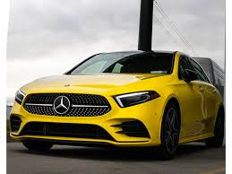 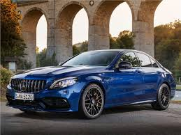Одновременно с производством легковых автомобилей фирма уделяла немало внимания восстановлению гоночной репутации. Целое бюро занималось созданием лёгких аэродинамических кузовов. Особым успехом стал автомобиль Mercedes-Benz W196, на котором аргентинский гонщик Хуан-Мануэль Фанхио выиграл чемпионаты Формулы 1 в 1954 и 1955 годах (см. команда Мерседес в формуле 1)[30][31]. Сам автомобиль построен на основе опыта бывших конструкторов авиадвигателей истребителя Messerschmitt Bf.109 и имел систему впрыска топлива и десмодромный привод клапанов. В 1955 году улучшенная версия автомобиля — Mercedes-Benz W196S (300SLR) под номером 722, за рулём которой сидел знаменитый английский гонщик Стирлинг Мосс, установила не побитый по сей день рекорд гонки Милле Милья. Несмотря на трагический исход гонки 24 часа Ле-Мана, в которой погибли Пьер Левег и 82 зрителя, команда Mercedes-Benz выиграла чемпионат мира в 1955 году. Однако после этого марка ушла из гоночного мира на многие годы. Но успех не мог остаться без последствий. Ещё в 1952 году появилась гоночная модель Mercedes-Benz W194, предшественница SLR, которая смогла финишировать на втором и четвёртом местах в Милле Милья этого же года, а также участвовала в гонках Carrera Panamericana и Targa Florio. Кузов автомобиля состоял из трубчатой рамы, покрытой листами, сделанными из лёгкого запатентованного алюминиевого сплава и имел облегчённый и переделанный вариант шестицилиндрового двигателя от «аденауэра». Самыми интересными элементами конструкции выступали форма кабины и дверей, которые, для обеспечения прочности и уменьшения веса, открывались вверх. Они и дали автомобилю прозвище «крыло чайки». В 1953 году бизнесмен Макс Хоффман предложил фирме Mercedes-Benz создать дорожную версию W194 для развивающегося американского рынка. Результатом стал Mercedes-Benz W198 (300SL). С момента премьеры в 1954 году его футуристические черты и необычные двери гарантировали модели полный успех. Элита США, куда поставлялись более 80 % всех автомобилей, раскупала их на аукционах. Изначально на автомобили устанавливался двигатель с системой из трёх карбюраторов типа Weber, развивавший мощность в 115 л. с., однако вскоре компания заменила их на систему впрыска топлива фирмы Bosch, что повысило мощность до 215 л. с. и позволило увеличить максимальную скорость до 250 км/ч. Успех автомобиля 300SL шокировал саму фирму. Однако при всех его плюсах сложная конструкция и долгая сборка делали его стоимость недоступной для старого света. Чувствуя потенциал открывшегося для марки рынка, инженеры Mercedes-Benz сразу принялись разрабатывать массовую модель на базе стандартного «понтона» Mercedes-Benz 190 (W121). При этом автомобиль сохранил многое от 300SL — независимую переднюю подвеску и заднюю подвеску с качающимися полуосями. В апреле 1954 года состоялась премьера «младшего брата» 190SL. Автомобиль выпускался как родстер, либо со съёмной жёсткой крышей, либо со складывающейся брезентовой. Цена на него была почти в два раза меньше, чем у 300SL. Автомобиль оказался очень успешным, особенно среди женщин.
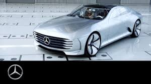xВ 1957 году 300SL подвергся крупной модернизации, в ходе которой он лишился своей уникальной конструкции дверей-крыльев. Причин этому было несколько: во-первых, автомобиль был скорее гоночным, нежели класса Гран-Туризмо, в который он неожиданно перешёл. Следовательно, в плане удобства имел большие недостатки, такие как отсутствие багажника, слабую вентиляцию (только за счёт задних треугольных форточек, которые могли приоткрыться) и вход и выход пассажиров в салон, который был очень неудобен, особенно для женщин. Ещё одной причиной стала высокая смертность в авариях, вследствие того, что пассажирам трудно выбраться из автомобиля, особенно при его перевороте. Поэтому в 1957 году появился новый 300SL, который превратился в родстер, аналогично 190SL и выпускался как с брезентовой, так и со съёмной жёсткой крышей. При этом автомобиль получил новую, более комфортабельную заднюю подвеску, дисковые тормоза (с 1961 года) и, впервые для Mercedes-Benz, на него поставили новый тип вертикальных фар, которые вскоре станут характерной чертой всех последующих моделей марки вплоть до начала 1970-х годов. В 1963 году завершился выпуск обоих автомобилей. Всего было выпущено 1400 автомобилей 300SL первого поколения и 1858 второго. «Понтонных» 190SL построено 25 881. Оба автомобиля открыли для марки совершенно новый класс машин, которые отныне имели окончание SL — Sport Leicht — спортивно-лёгкий. Первые модели SL 1955 Mercedes-Benz 300SL Gullwing Coupe 34 right.jpg EM Mercedes 5694.jpg Mercedes-Benz 300 SL Roadster vr.jpg 300SL W198 (1954—1957) 190SL R121 (1955—1963) 300SL W198 (1957—1963) Плавники В 1950-х годах Западная Европа выходила из разрухи и бедности — последствий Второй мировой войны. В сентябре 1956 года, когда Понтоны только ещё начали выпускаться, руководство Daimler-Benz занялось разработкой нового поколения автомобилей. Главные требования были выше, чем когда-либо: безопасность и удобство пассажиров внутри, снаружи машина должна была иметь форму автомобилей итальянского стиля, переднюю же часть унаследовать от классических традиций Mercedes-Benz. Разработка началась в 1957 году, в период, когда бесспорным лидером автомобильной промышленности была Америка. Американский внешний дизайн автомобиля переживал революцию, которая была вызвана эпохой реактивного воздушного и космического полёта (отсюда характерные «крылья», которые украшали заднюю часть кузова). В последний момент ведущий инженер-дизайнер компании добавил эту деталь в новую конструкцию разрабатываемого автомобиля. Хотя сами крылья были намного меньше и скромнее, чем их американские собратья, их форма дала характерное прозвище всему поколению автомобилей — «Heckflosse» или «плавники». В конце 1950-х начале 1960-х американская мода автомобильного дизайна диктовала свой стиль «крыльев», и Mercedes-Benz W112 «300SE» не стал исключением, но более консервативный немецкий подход превратил их в небольшие, элегантные «плавники», которыми неофициально и назывались автомобили целого поколения Производство новой модели стартовало в начале 1959 года. Осенью на Франкфуртском автосалоне автомобиль W111 был представлен широкой публике[32]. Несмотря на то, что шасси было одинаковое с понтонами, внешне «плавник» выглядел совершенно иначе, имея элегантный кузов, вертикальный блок фар, и конечно же, сами плавники. Помимо этого, Mercedes-Benz опередил весь мир, запатентовав передние и задние зоны деформации, которые поглощают кинетическую энергию столкновения, и ремни безопасности. Внутри салон был намного просторнее, и при этом вся панель приборов и даже руль были обшиты мягким материалом. Площадь остекления выросла на 35 %, тем самым улучшив обзор водителю и пассажирам. Комфортабельность также улучшила независимая задняя подвеска. W111 заменил седаны W128 и W180, с моделями «220b», «220Sb» и «220SEb» (b — никогда внешне не упоминалась, но была введена, чтобы не спутать с ранними моделями). Модели различались, помимо разных мощностей двигателя (от 95 до 120 л. с.), своей компоновкой, и «220SE» считалась неким флагманом линейки. Выпуск продолжался до лета 1965 года, когда появился преемник W108 (см. ниже). Однако за счёт своей популярности выпуск модели «220S» продолжился, автомобиль получил увеличенный диаметр цилиндров (мощность возросла на 20 л. с.) и пневматическую, самовыравнивающуюся заднюю ось. Из-за более крупного объёма двигателя автомобиль был переименован в «230S», и его выпуск продолжался до января 1968 года. Всего было выпущено 337 803 автомобиля такого типа.
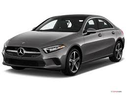Вслед за W111 началась разработка замены остальным понтонным автомобилям, в частности двухдверным купе и кабриолетам. При разработке внешнего вида Mercedes-Benz попробовал придать автомобилю более спортивный характер с аналогичным передним и задним оформлением от будущего SL «Пагода» (см. ниже), однако лишь задняя часть оформления дошла до купе и кабриолета, за счёт чего их «плавники» лишились хромированного подчёркивания. В марте 1961 года бесстоечные двухдверные автомобили «220SEb» произвели фурор на Женевском автосалоне. Одновременно с работой по замене понтонных двухдверных 220-х на плавниковые шли работы по созданию массовой бюджетной версии плавников, которая бы заменила четырёхцилиндровые седаны W120 и W121. Летом 1961 года появился автомобиль W110 в двух моделях: «190c» и «190Dc». Как и прежде, автомобили были почти одинаковы с W111, но имели более скромное переднее оформление (на 14,5 см короче). W110 был более экономичен, особенно дизельный «190D», который стал любимым автомобилем для многих таксистов. На базе W110-го строились универсалы, кареты скорой помощи и т. д. Интересно заметить, что за счёт одинаковой конструкции с W111, во множестве модернизаций за время выпуска, Mercedes-Benz ставил более дорогие агрегаты флагманского седана на W110, например, регулировку спинок кресел, вентиляцию, внешний хромированный декор, но главное — двигатели. В 1965 году, при запуске нового поколения двигателей, «190»-е превратились в «220» и «220D». Но главной стала модель «230», которая возникла путём установки шестицилиндрового двигателя от W111 «230S» в кузов W110. В январе 1968 года Mercedes-Benz прекратил её производство, выпустив к тому времени 628 282 автомобиля. Последний штрих истории плавников был сделан в том же 1961 году. Mercedes-Benz завершил выпуск не только понтонов, но и высшую лигу автомобилей ручной сборки W189 «Аденауэр» «300». Работа над заменой лимузина высшего класса только началась, а завершение выпуска устаревшего рамного лимузина образовало нишу в модельном ряду. Mercedes-Benz решил проблему простейшим способом, поставив крупный трёхлитровый двигатель в обычный седан W111. Результатом стал автомобиль с намного улучшенными динамическими характеристиками. Добавив пневматическую подвеску, автоматическую коробку передач, роскошный интерьер и удвоив количество хромированной внешней отделки, Mercedes воссоздал роскошь лимузина в обычном седане. Однако, зная, что многие из высших эшелонов покупателей могут не принять данную «халтурность», Mercedes-Benz решил дальше оторвать флагманскую модель «300SE» от основной линейки, и даже выделил отдельный заводский индекс W112. А в 1963 году появилась модель с удлинённой колёсной базой «300SEL». Как и ожидалось, не все положительно отреагировали на замену автомобиля ручной сборки массовым автомобилем в комплектации люкс. Тем не менее, за короткий период его выпуска (по 1965 год) было выпущено 5202 «300SE» и 1546 «300SEL». Разбив табу преемственности, в марте 1962 года Mercedes-Benz пошёл на следующий логический шаг и поставил тот же мотор на двухдверные плавники. Такой W112 «300SE» отличался от W111 «220SE» по аналогичным признакам седанов (больше внешнего хрома, обшивка панели приборов из корня орехового дерева и т. д.).
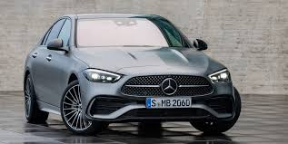Плавники P060 Mercedes-Benz 220 W111.jpg Mercedes Cabrio 250 SE Budapest 2005 093.jpg Mercedes-Benz "300 SE lang" (W112.015).jpg Mercedes SE Coupé.jpg Mercedes-Benz W110 front 20080703.jpg 220 W111 (1959—1968) 250SE W111 (1961—1971) 300SE W112 (1961—1965) 300SE W112 (1961—1967) 190 W110 (1961—1968) К началу 1960-х годов мода на плавники уже успела уйти из автомобильного дизайна, но обновление автомобильного парка продолжалась, и летом 1963 года настал черёд замены спортивной серии SL. До конца 1962 года продолжался одновременно массовый выпуск четырёхцилиндровых родстеров W121 «190SL» и ручная сборка роскошных автомобилей гран туризмо W198 «300SL». Аналогично тому, как W111 и W112 объединили разные седаны 220-й и 300-й серий, новый автомобиль W113 объединил оба класса SL. Разработка автомобиля шла по тому же пути, глубокая модернизация понтонного кузова. Но при этом на ней уже стоял не четырёх-, а шестицилиндровый двигатель. Имея простой компактный кузов, независимую подвеску и конечно же, возможность снять либо жёсткую, либо брезентовую крышу, новый родстер «230SL» быстро стал популярной машиной, особенно среди женщин. Именно необычная форма крыши и дала ему прозвище «Пагода» во время его премьеры. Впоследствии автомобиль дважды модернизировался задними дисковыми тормозами и более мощными двигателями «250SL» (1967) и «280SL» (1968—71). Всего было выпущено 48 912 таких автомобилей Следующий 1964 год наконец решил проблему с заменой Аденауэров. Как уже отмечалось, автомобиль W112 «300SE», хоть и был оснащён на порядок лучше, чем стандартные плавники, он всё-таки оставался массовым автомобилем, и был временным решением для замены W189. Настоящий преемник Аденауэра, лимузин W100 был почти 5,5 метров в длину, имел пневматическую подвеску, квадратный кузов и внутри мог быть оснащён любыми деталями комфорта, вплоть до телевизора. Но главным стал его двигатель: старый трёхлитровый уже не годился для автомобиля массой в три тонны, да и после серии W112 он уже успел опуститься из эксклюзивности в массы, и Mercedes-Benz вернул в свой ряд первый V-образный восьмицилиндровый двигатель. Мотор M100 объёмом 6,3 литра, имея 250 л. с., мог разогнать огромный автомобиль до 205 км/ч, тем самым сделав его вторым по скорости автомобилем ФРГ (после Порше 911). Модель «600» могла выпускаться, помимо стандартного лимузина, в комплектации удлинённого (на 74 см) «Пульман» или полукабриолета «Ландоле», которые закупались главами стран для парадных целей, а также Ватиканом как Папамобиль. В целом автомобиль стал настолько успешным, что его сборка продолжалась до 1981 года (было выпущено 2677 автомобилей).
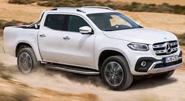 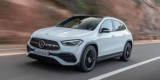